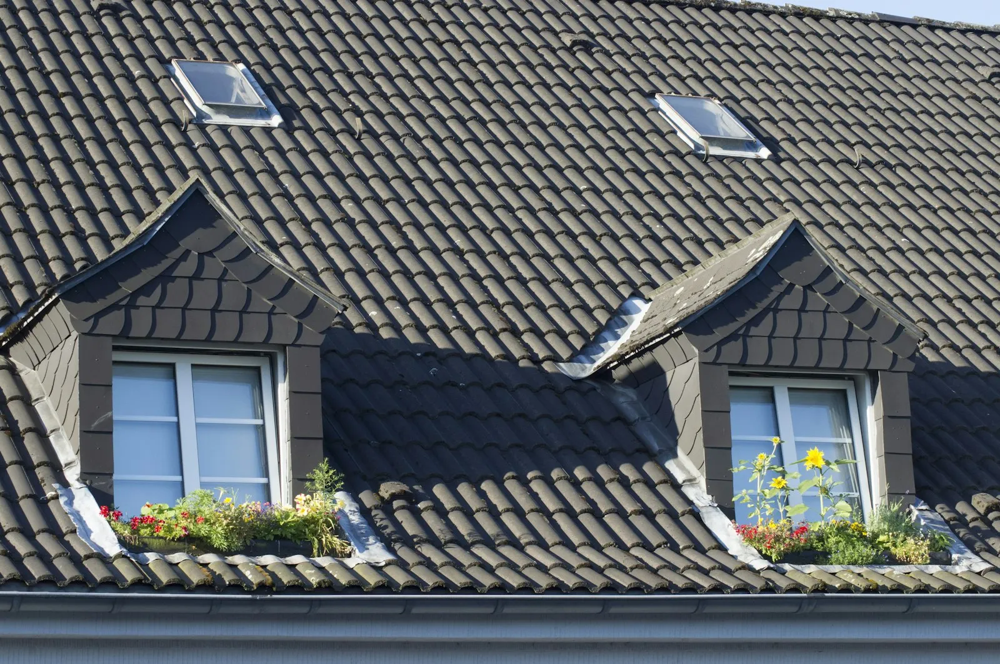
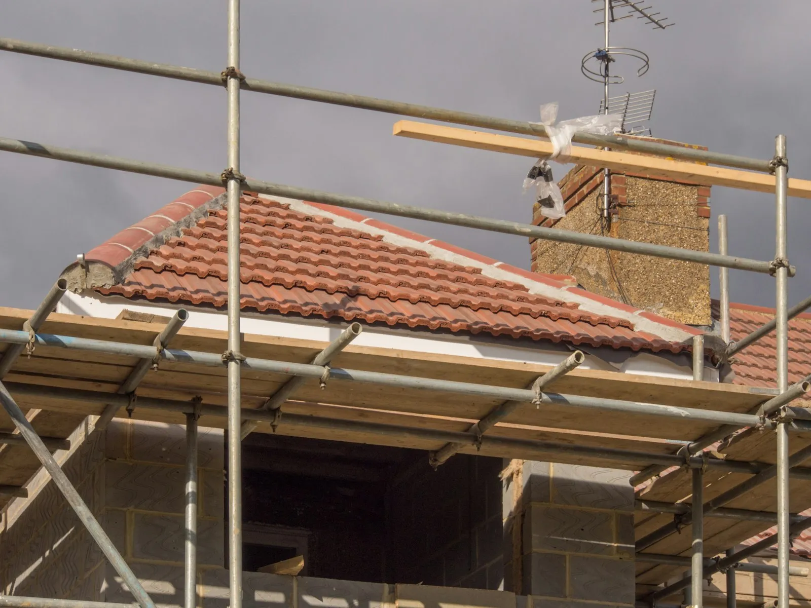
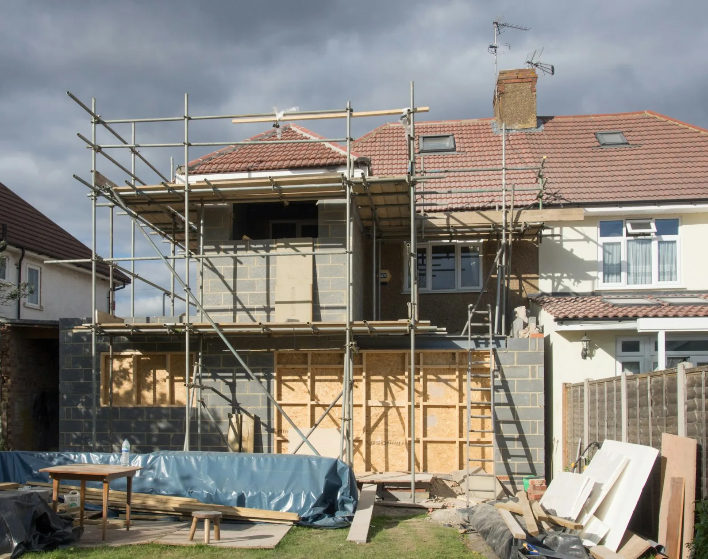
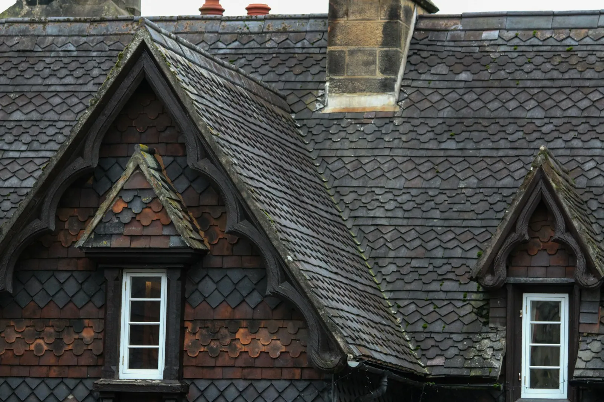

Nieuwe daken
Volledig nieuw dak met pannen of leien, inclusief onderdak en isolatie.
VDC Dakwerken legt nieuwe daken, renoveert oude en herstelt wat lekt. Hellend of plat, groot of klein. En je kan elke dag bellen, tot 's avonds laat.

Van een volledig nieuw dak tot een pan die verschoven is. Je krijgt eerst een duidelijke offerte, pas daarna begint het werk.
Volledig nieuw dak met pannen of leien, inclusief onderdak en isolatie.

Je oude dak vernieuwd en beter geïsoleerd.

Nieuw, hersteld of opnieuw afgewerkt.
Bel meteen. Het dak wordt eerst waterdicht gemaakt, dan wordt de oorzaak gezocht.

Reinigen, herstellen of vervangen.
Een snelle schatting van de oppervlakte helpt om je aanvraag concreet te maken. Vul de afmetingen van je woning in. Voor een prijs komen we altijd eerst ter plaatse meten.
Van maandag tot zaterdag van 7 uur 's morgens tot 22 uur 's avonds. Op zondag van 9 uur tot 21u30. Een lek wacht niet tot maandag.

Bel, of stuur een berichtje met een foto van je dak. Dan spreken we af wanneer we komen kijken.

Op Google, van klanten die hun dak aan VDC toevertrouwden.
Nee, het is een ruwe schatting van de oppervlakte. Voor een prijs komen we ter plaatse meten en kijken in welke staat je dak is.
Ja. Van maandag tot zaterdag tot 22 uur en op zondag tot 21u30.
Vang het water op, haal waardevolle spullen weg en bel. Het dak wordt eerst waterdicht gemaakt, daarna volgt de echte herstelling.
Ook in de gemeenten errond. Vraag het gerust even.
Ik maakte deze demo voor jullie om te tonen wat er kan. Na een kort gesprek maak ik er iets veel persoonlijkers van, helemaal naar jullie wens.
Vrijblijvend. Ik kom langs of we bellen.
Op maat, op jullie eigen domein.
Geen voorschot. Jullie betalen pas als alles klaar is.
Hosting, domeinnaam en kleine wijzigingen, zoals nieuwe openingsuren.
Omdat een voorbeeld meer zegt dan een mail. Zo zien jullie meteen wat er kan, en het kost jullie niets.
Nee. Het gesprek is vrijblijvend. Vinden jullie het niks, dan is het daarmee gedaan.
Na ons gesprek staat jullie site binnen 10 tot 14 dagen online.
Zeker. Jullie domeinnaam kan gewoon blijven, de nieuwe site komt in de plaats van de oude.
Nee, dat doe ik op basis van ons gesprek. Eigen foto's zijn mooi meegenomen, maar niet nodig om te starten.